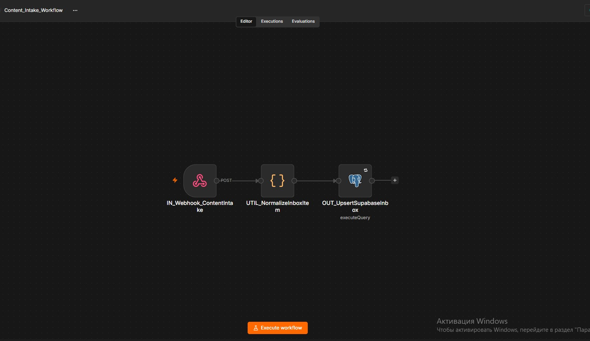
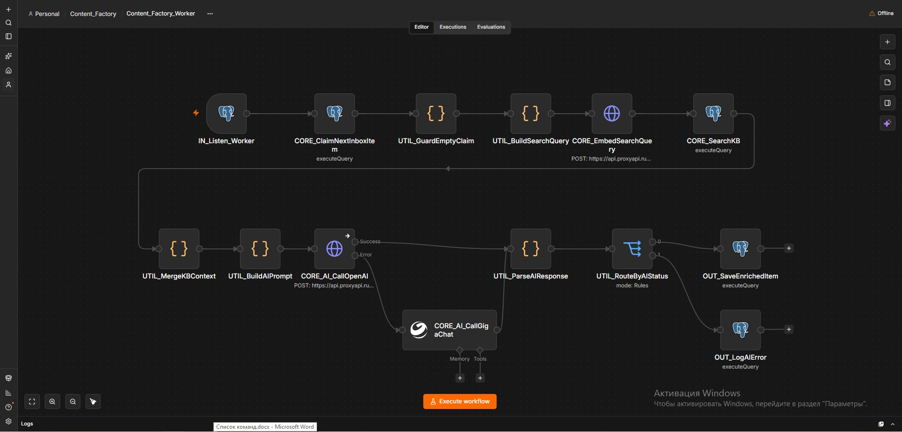
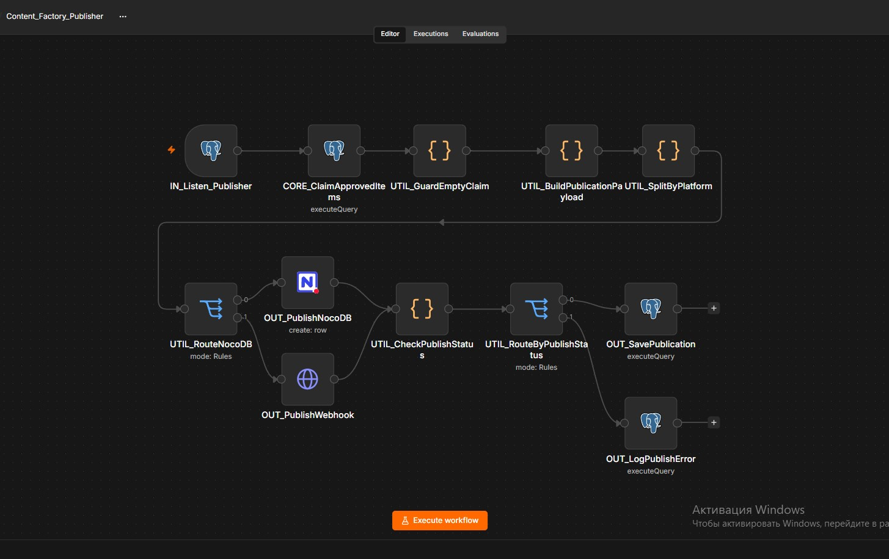
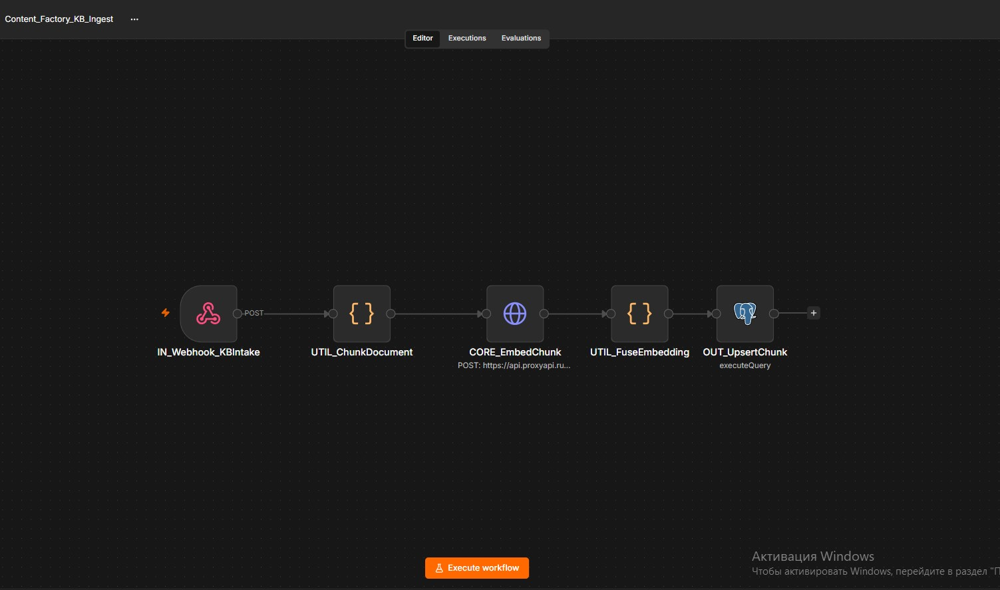
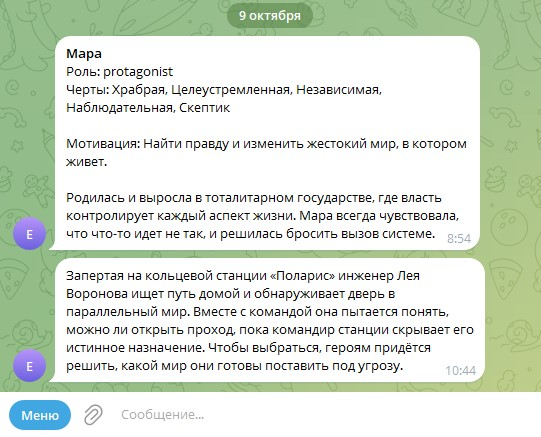
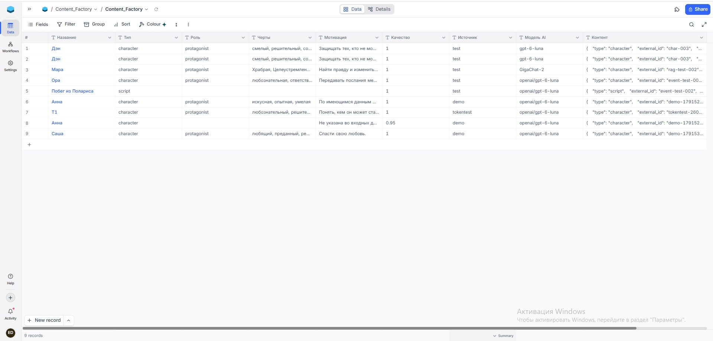
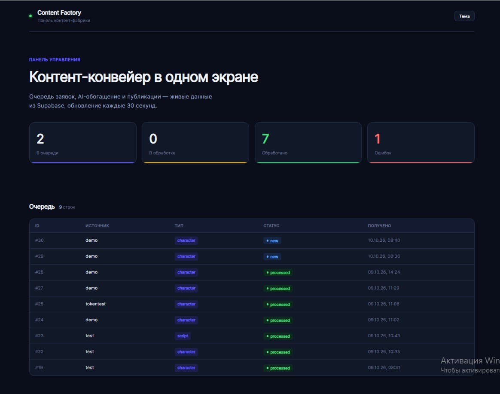
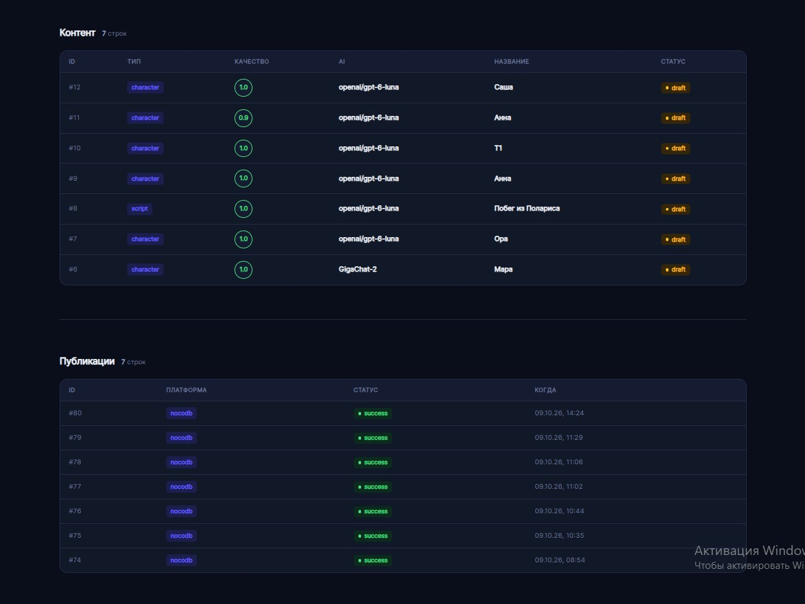
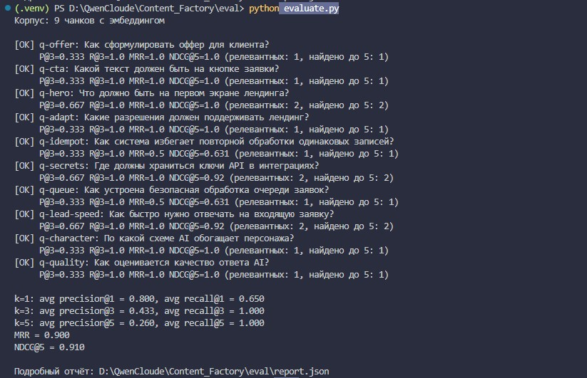

Бизнес-проблема
Команды, которые готовят контент (персонажей, сценарии, анонсы), тратят часы на однотипную рутину: написать характеристику героя, собрать аннотацию, оформить карточку публикации. При этом:
- Долго: описание одного персонажа руками — от получаса до часа
- Разнобой: разные редакторы пишут по-своему, форматы не совпадают
- Потери: заявка может потеряться, статус не обновлён, работу дублируют
- Ошибки: человеческий фактор — пропущенные поля, опечатки, несогласованный стиль
Что делает фабрика
Всё просто: заявка входит через webhook, дальше всё происходит само.
- Приём: CRM, форма или API шлют заявку на webhook — мгновенно, с токеном
- AI-обогащение: OpenAI или GigaChat превращают сырые данные в структурированный JSON: имя, роль, черты, мотивация, предыстория
- База знаний: воркфлоу KB-ingest загружает стильбуки и гайды, AI перед ответом ищет в них релевантный контекст и соблюдает стиль компании
- Контроль качества: система проверяет, что ответ — валидный JSON и заполнен
- Публикация: готовый контент уходит в Telegram-канал, NocoDB-таблицу и webhook
- Мониторинг: каждая заявка в журнале, ошибки не теряются
Архитектура
Четыре независимых воркфлоу связаны базой данных: KB-ingest (загрузка базы знаний), Intake (приём), Worker (обогащение), Publisher (публикация). Ошибка в одном не останавливает другие.
Скриншоты
Нажмите на скриншот, чтобы увеличить.









Пример: как появляется персонаж
В демо достаточно ввести имя и пару слов — вот что система сделает сама:
- На входе: «Мара, главная героиня антиутопии»
- AI соберёт: роль (главный герой), 5 черт характера, мотивацию, предысторию и арку развития
- Проверит качество и отправит карточку в Telegram и NocoDB
Публикация в Telegram: «Мара · Роль: главный герой · Черты: Храбрая, Целеустремлённая… Мотивация: найти правду и изменить жестокий мир».
AI и база знаний (RAG)
Чтобы контент был не «как повезёт», а в стиле компании, перед каждым обогащением система ищет в базе знаний (стильбуки, гайды) и подкладывает найденное в промпт. Поиск — векторный, по смыслу, а не по словам.
- KB-ingest: отдельный воркфлоу загружает документы — webhook /kb-intake → чанкинг → эмбеддинги → таблицы pgvector
- Поиск: pgvector по косинусной близости, top-3
- Качество проверено: автоматическая оценка на тестовых вопросах — recall@3 = 1.0, MRR = 0.9, NDCG@5 = 0.91
- 5 документов: оффер, лендинг, n8n-стандарты, лиды, AI-контент — применимы и для других проектов
Надёжность
- Нет дублей: уникальный ключ (source, external_id) + INSERT ON CONFLICT
- Нет гонок: очередь с FOR UPDATE SKIP LOCKED — параллельные Worker не схватят одну заявку
- Событийный запуск: workflow стартует по INSERT в БД, а не по таймеру — VPS не нагружается впустую
- Секреты: только в n8n Credentials, без ключей в коде
- Ошибки: журнал cf_error_log с контекстом каждого сбоя + Telegram-уведомления
Результаты
Попробовать в деле
Введите имя персонажа — и смотрите, как фабрика проведёт его через весь конвейер: приём, AI-обогащение и публикацию. Живой пример, работает 24/7.
Запустить живое демо Открыть дашборд